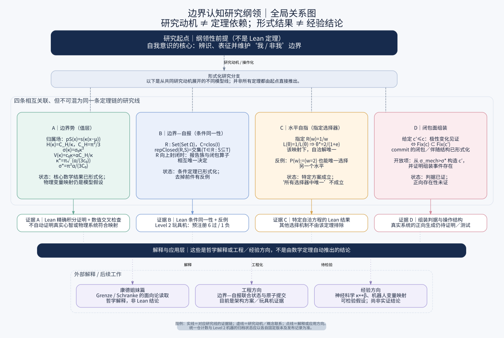

边界理论 · 高学强
研究地图
研究纲领的全局关系图
这张图展示研究纲领每条研究线当下的位置——纲领性前提、形式化工作、背后的证据，以及它如何通向解释与应用。它是一张工作地图，不是一条单一的定理链。

研究纲领的全局关系图。四条相互关联的研究线从共同的研究动机展开；并非所有定理都由起点直接推出。
四个层次
第一层
研究起点
纲领性前提——自我意识的核心是辨识、表征并维护“我 / 非我”边界。这不是 Lean 定理。
第二层
四条形式化研究线
A｜边界势（值层）；B｜边界—自报（条件同一性）；C｜水平自指（指定选择器）；D｜闭包面组装。
第三层
对应证据
每条线的定理、反例或未完成项：Lean 证明、数值交叉检查、Level 2 玩具机，以及开放的构造问题。
第四层
解释与应用
康德姐妹篇、工程方向、经验方向——这些是哲学解释或工程／经验方向的提案，不是由数学定理自动推出的结论。
箭头语义
| 样式 | 含义 |
|---|
| 实线 | 对应研究线的证据链。 |
| 虚线 | 研究动机／概念联系——不是数学推导。 |
| 点线 | 解释或应用方向。 |
状态注记
本图描述 2026-10-19 的状态。统一仓计数与 Level 2 机器的归档状态应以各自固定版本及发布记录为准。
下载
SVG：boundary_programme_map.zh.svg · PNG：boundary_programme_map.zh.png
相关页面
如何质疑这项工作 · 机器检验过的结果 · 范围